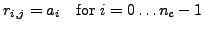

Next:
Extracting a color column
Up:
Type conversion and component
Previous:
Extracting a color column
Inserting a color vector into a color matrix
Syntax
void QLA_
T
_
eqop
_colorvec_V( restrict Type *r, QLA_ColorVector *a,
int j)
Meaning

T
M
eqop
eq
James Osborn 2006-06-25